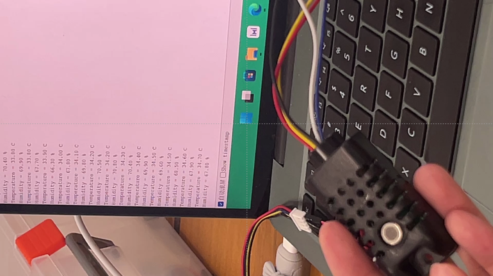

技术方案
利用solidworks绘制开合器装置
利用UItiMaker Cura进行3D打印制作卡座
底座
卡座
齿轮
传感器测试
二氧化碳传感器测试
测试代码
byte buffer[12]; //创建一个长度为12的字节数组
int CO2_VALUE;
void setup()
{
Serial.begin(9600); //硬件串口0 波特率：9600
Serial1.begin(9600); //硬件串口1 波特率：9600
Serial.print("CO2 Test");
}
void loop()
{
delay(100);
if(Serial1.available()>=6) // 如果串口接收到的字节数大于等于6个
{
Serial1.readBytes(buffer, 6); // 读取6个字节到数组中
if(buffer[0] == 0x2C)
{
CO2_VALUE = buffer[1]*256+buffer[2];
}
Serial.print("CO2:");
Serial.println(CO2_VALUE);
}
}
温湿度传感器测试

测试代码
#include "DHT.h"
#define DHTPIN 4
#define DHTTYPE DHT21
DHT dht(DHTPIN, DHTTYPE);
void setup() {
Serial.begin(9600);
Serial.println(F("DHTxx test!"));
dht.begin();
}
void loop() {
delay(2000);
float h = dht.readHumidity();
float t = dht.readTemperature();
float f = dht.readTemperature(true);
if (isnan(h) || isnan(t) || isnan(f)) {
Serial.println(F("Failed to read from DHT sensor!"));
return;
}
float hif = dht.computeHeatIndex(f, h);
float hic = dht.computeHeatIndex(t, h, false);
Serial.print(F("Humidity: "));
Serial.print(h);
Serial.print(F("% Temperature: "));
Serial.print(t);
Serial.print(F("°C "));
Serial.print(f);
Serial.print(F("°F Heat index: "));
Serial.print(hic);
Serial.print(F("°C "));
Serial.print(hif);
Serial.println(F("°F"));
}
甲醛传感器测试
测试代码
void setup() {
// initialize serial communication at 9600 bits per second:
Serial.begin(9600);
}
void loop() {
// read the input on analog pin 0:
int sensorValue = analogRead(A0);
Serial.println(sensorValue);
delay(500); // delay in between reads for stability
}
继电器测试
测试代码
#include
#define DHTPIN 4
#define DHTTYPE DHT21
DHT dht(DHTPIN, DHTTYPE);
byte buffer[12];
int CO2_VALUE;
int HCHO_Value;
const int RELAY_PIN = 7; // 继电器连接的数字端口
void setup() {
Serial.begin(9600); // 硬件串口0，与Processing连接
Serial1.begin(9600); // 硬件串口1，与JW01-CO2传感器连接
dht.begin();
pinMode(RELAY_PIN, OUTPUT); // 设置继电器引脚为输出模式
}
void loop() {
// 读取DHT21温湿度传感器数据
float temperature = dht.readTemperature();
float humidity = dht.readHumidity();
// 读取JW01-CO2传感器数据
if (Serial1.available() >= 6) {
Serial1.readBytes(buffer, 6);
if (buffer[0] == 0x2C) {
CO2_VALUE = buffer[1] * 256 + buffer[2];
}
}
// 读取KQ-2801甲醛传感器数据
HCHO_Value = analogRead(A0);
// 将数据发送到串口0（与Processing连接）
if (!isnan(temperature) && !isnan(humidity)) {
Serial.print(temperature);
Serial.print(",");
Serial.print(humidity);
Serial.print(",");
Serial.print(CO2_VALUE);
Serial.print(",");
Serial.println(HCHO_Value);
// 判断甲醛浓度是否超过25，控制继电器
if (HCHO_Value > 25) {
digitalWrite(RELAY_PIN, HIGH); // 继电器闭合，执行相应操作（需要根据实际需求修改）
} else {
digitalWrite(RELAY_PIN, LOW); // 继电器断开
}
}
delay(1000); // 延时1秒
}
Arduino读取传感器测试
测试代码
#include
#define DHTPIN 4
#define DHTTYPE DHT21
DHT dht(DHTPIN, DHTTYPE);
byte buffer[12];
int CO2_VALUE;
void setup() {
Serial.begin(9600); // 硬件串口0, 与Processing连接
Serial1.begin(9600); // 硬件串口1, 与JW01-CO2传感器连接
dht.begin();
}
void loop() {
// 读取DHT21温湿度传感器数据
float temperature = dht.readTemperature();
float humidity = dht.readHumidity();
// 读取JW01-CO2传感器数据
if (Serial1.available() >= 6) {
Serial1.readBytes(buffer, 6);
if (buffer[0] == 0x2C) {
CO2_VALUE = buffer[1] * 256 + buffer[2];
}
}
// 读取KQ-2801甲醛传感器数据
int HCHO_Value = analogRead(A0);
// 将数据发送到串口0（与Processing连接）
if (!isnan(temperature) && !isnan(humidity)) {
Serial.print(temperature);
Serial.print(",");
Serial.print(humidity);
Serial.print(",");
Serial.print(CO2_VALUE);
Serial.print(",");
Serial.println(HCHO_Value);
}
delay(1000); // 延时1秒
}
Processing读取Arduino数据屏幕显示测试
测试代码
import processing.serial.*;
import processing.core.PImage; // 导入处理图片的类
PImage backgroundImage; // 声明图片变量
Serial myPort; // 与 Arduino 连接的串口对象
float[] sensorData = new float[4]; // 存储传感器数据的数组
boolean newData = false; // 新数据标志
int updateInterval = 1000; // 更新间隔，单位毫秒
int lastUpdate = 0; // 上次更新时间
void setup() {
size(2500, 1350); // 创建一个 800x600 像素的窗口
backgroundImage = loadImage("your_image.jpg"); // 加载图片，替换"your_image.jpg"为您的图片路径
background(0, 0, 255); // 背景色为蓝色
textAlign(LEFT, CENTER); // 设置文本居左对齐
textSize(120); // 字体大小为 120
// 修改串口名称和波特率为 Arduino 使用的串口和波特率
myPort = new Serial(this, "COM3", 9600);
}
void draw() {
image(backgroundImage, 0, 0); // 显示图片背景
// 每隔一定时间更新数据
if (millis() - lastUpdate > updateInterval) {
while (myPort.available() > 0) {
String dataString = myPort.readStringUntil('\n'); // 读取串口数据直到换行符
if (dataString!= null) {
String[] data = dataString.trim().split(","); // 拆分数据字符串为数组
if (data.length == 4) {
try {
// 解析数据为浮点数
sensorData[0] = Float.parseFloat(data[0]); // 温度
sensorData[1] = Float.parseFloat(data[1]); // 湿度
sensorData[2] = Float.parseFloat(data[2]); // CO2
sensorData[3] = Float.parseFloat(data[3]); // 甲醛
newData = true; // 设置新数据标志
} catch (NumberFormatException e) {
println("Error parsing sensor data: " + e.getMessage());
}
}
}
}
lastUpdate = millis(); // 更新时间戳
}
// 显示传感器数据
if (newData) {
displayData();
newData = false; // 重置新数据标志
}
}
void displayData() {
textAlign(LEFT, CENTER); // 确保文本居左对齐
fill(165, 42, 42); // 棕色字体颜色
// 显示温湿度、CO2 和甲醛数据
text("Temperature: " + nf(sensorData[0], 0, 1) + " °C", 100, height/2 - 150);
text("Humidity: " + nf(sensorData[1], 0, 1) + " %", 100, height/2 - 30);
text("CO2: " + nf(sensorData[2], 0, 0) + " ppm", 100, height/2 + 90);
text("HCHO: " + nf(sensorData[3], 0, 2), 100, height/2 + 210);
}